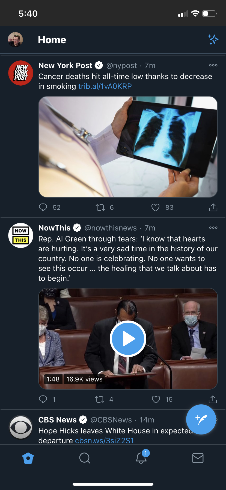
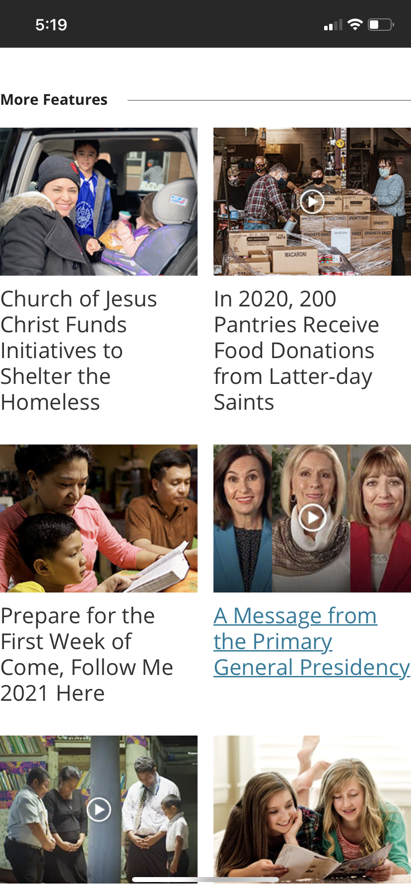
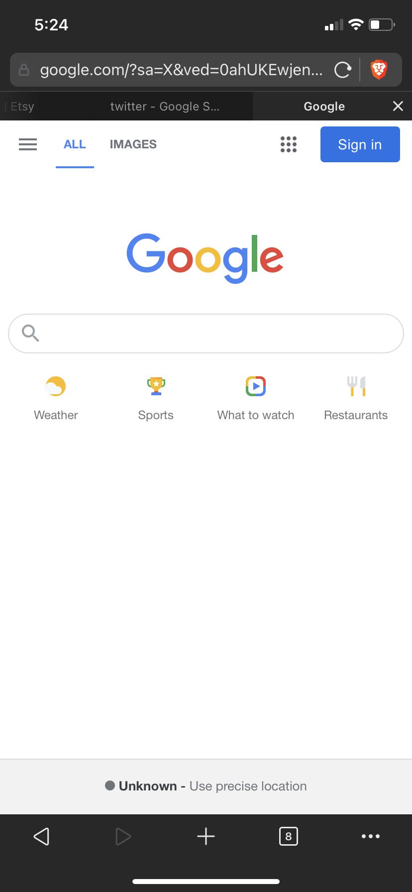

www.twitter.com
Here we see twitter using excellt Alignment in their mobile design. Take a look at how how the items are left justifeid. There is a strong invisible line on the left sign that all of parts of the page follow. From the bolded home to the usernames, tweets, and the pictures all of the content follows that line. This creates a sense of organization as it it allows the page to feel stuctured. Things arent just place where ever.
www.churchofjesuschrist.org
Repetition is something that we see alot when it comes to the shapes that we see on the churchs homepage. There are lots of square and rectangle shapes. Repetion allows a single design element to become a key part of the aesthetic and look of the page. The church site uses squares and rectangles with pictures to act as links/buttons the articles that the user may find relavent. Repetion allows the feel of the page to be tied together with a common element
www.google.com
Google's home page proves that less is more. So many landing pages are so jumbled that you don't know what to look at. It's there search bar with a few other bits to add. Ocasionally a doodle or a ribbio or some other Miscellaneous thing will be apart of the homescreen, but with how much white space is there it works. Also white space need not literally be white. The most important thing is that there is enoguh space between all the elements on the page. Breathing rooom in a sense.